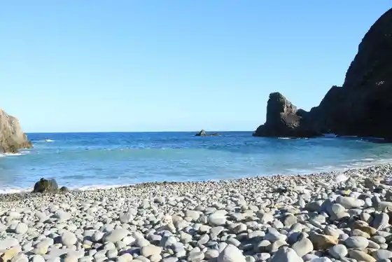
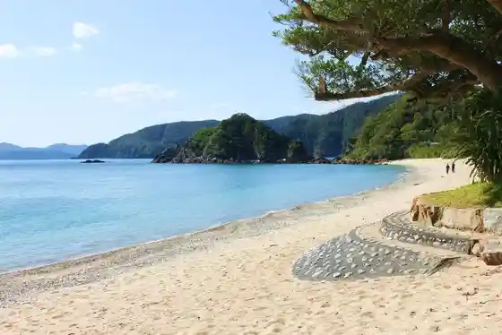
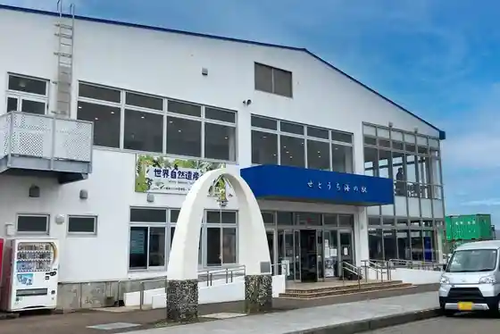

Ho no Hoshi Coast
Setouchicho, Kagoshima · 0997-72-1111 · Official / source link

Kochi Yama Lookout
Setouchicho, Kagoshima · 0997-72-1001 · Official / source link
Yadori Hama Campground
Setouchicho, Kagoshima · 0997-72-1001 · Official / source link

Setochi Umi no Eki
Setouchicho, Kagoshima · 0997-72-4626 · Official / source link

Suichu Kankosen (Marimbyuwa Seto)
Setouchicho, Kagoshima · 0997-72-1326 · Official / source link
Sango no Ishigaki
Setouchicho, Kagoshima · 0997-72-1115 · Official / source link
Shinju Toridashi Experience
Setouchicho, Kagoshima · 0997-72-4061 · Official / source link
Mi Kyu (Saneku) Coast
Setouchicho, Kagoshima · 0997-72-1199 · Official / source link
O Sei no Gajumaru
Setouchicho, Kagoshima · 0997-72-1199 · Official / source link
An Ashi Ba Senseki Park
Setouchicho, Kagoshima · 0997-72-1199 · Official / source link
Suri Hama Coast
Setouchicho, Kagoshima · 0997-72-1199 · Official / source link
Sengyo Market Umi Chikara
Setouchicho, Kagoshima · 0997-72-1596 · Official / source link
Sho Don Deigo Namiki
Setouchicho, Kagoshima · 0997-72-1199 · Official / source link
Se So Minato
Setouchicho, Kagoshima · 0997-75-0430 · Official / source link
Toku Hama Coast
Setouchicho, Kagoshima · 0997-72-1199 · Official / source link
Yoshinori (Katoku) Coast
Setouchicho, Kagoshima · 0997-72-1111 · Official / source link
Yui Gaku Lookout
Setouchicho, Kagoshima · 0997-72-1199 · Official / source link
Nishiamuro no Yuhi
Setouchicho, Kagoshima · 0997-72-1199 · Official / source link
Nishi Furumi Engai Shiki Kansokujo
Setouchicho, Kagoshima · 0997-72-1199 · Official / source link
Nishi Furumi GATE
Setouchicho, Kagoshima · 070-9009-4133 · Official / source link
Watari Ren (Doren) Coast
Setouchicho, Kagoshima · 0997-72-1199 · Official / source link
Shimao Toshio Bungaku Hi
Setouchicho, Kagoshima · 0997-72-1199 · Official / source link
Ka Tetsu no Hato Wan
Setouchicho, Kagoshima · 0997-72-1199 · Official / source link
Yo Michi Shima
Setouchicho, Kagoshima · 0997-72-1199 · Official / source link
Su Ko Shigeru Coast
Setouchicho, Kagoshima · 0997-72-1199 · Official / source link
Aratonton no Kan
Setouchicho, Kagoshima · 0997-76-3374 · Official / source link